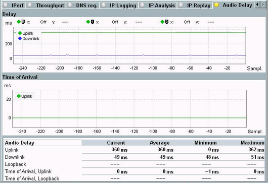
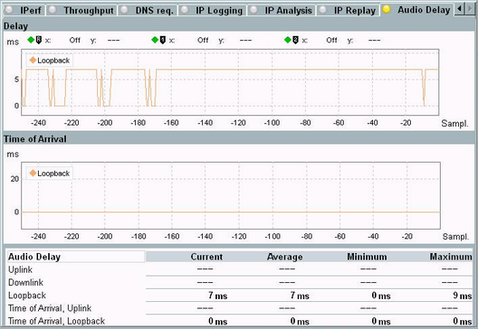
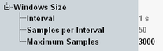

The "audio delay" measurement analyzes an established voice over IMS call. It determines how long the audio information needs to pass the R&S CMW. And it determines the timing error of audio packets received in the uplink direction.
Set up only a single call to get meaningful measurement results.
There are two measurement modes, depending on the media endpoint used by the call. The used media endpoint is configured in the settings of the virtual subscriber involved in the call, see "Media Endpoint".
For calls with the media endpoint "Audioboard", "Uplink" and "Downlink" results are displayed.

For calls with the media endpoint "Loopback", only "Loopback" results are displayed.

The upper diagram shows the measured audio delays vs. the received samples. Each sample corresponds to 20 ms.
- "Uplink":
System simulator delay TTES in the uplink direction (DUT sending). The delay starts with the last bit of a speech frame at the system simulator antenna (R&S CMW RF input connector). It ends with the first electrical event at the electrical access point of the test equipment (R&S CMW audio output connector). - "Downlink":
System simulator delay TTER in the downlink direction (DUT receiving). The delay starts with the first electrical event at the electrical access point of the test equipment (R&S CMW audio input connector). It ends with the first bit of the corresponding speech frame at the system simulator antenna (R&S CMW RF output connector). - "Loopback":
System simulator delay in echo mode TSS. The delay starts with the last bit of a received speech frame at the system simulator antenna (R&S CMW RF input connector). It ends with the first bit of the looped back speech frame at the system simulator antenna (R&S CMW RF output connector).
For "Uplink" and "Loopback", ensure that the DUT has enough audio input to send an audio packet every 20 ms. Silence periods can result in skipped audio packets and peaks in the trace. A peak every 8 samples, for example, means that the DUT has sent an audio packet every 160 ms.
Remote command:Plus corresponding FETCh commands.
The lower diagram shows the timing error of audio packets received in the uplink direction. Ideally, an audio packet is received every 20 ms and a flat line at 0 ms is shown.
Remote command:Plus corresponding FETCh commands.
The table below the diagrams provides a statistical evaluation for all measurement results.
The "Current" value refers to the sample number 0 in the diagrams.
The "Average", "Minimum" and "Maximum" values are calculated from all results since the beginning of the measurement.
Remote command:Plus corresponding FETCh commands.
Press the "Config" hotkey to access the measurement settings.

- "Interval": displays the fixed time interval between two display updates
- "Samples per Interval": displays the fixed number of measurement samples per interval
- "Maximum Samples": configures the maximum size of the X-axis of the diagrams. Measured data is kept within that range. Older data is discarded.
Turn the measurement on or off using the [ON | OFF] or [RESTART | STOP] keys. Alternatively, right-click the "Audio Delay" softkey.
The softkey shows the current measurement state. Additional measurement substates can be retrieved via remote control.
Remote command: